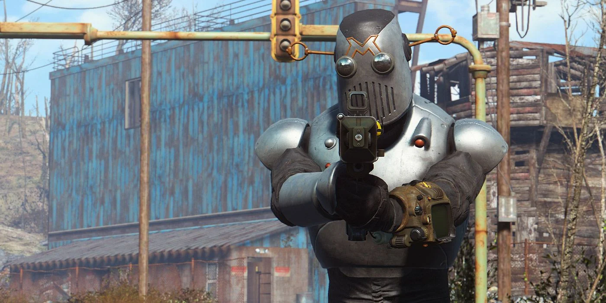

Una vez que tu personaje ha sido visualmente definido, es hora de abordar sus habilidades y atributos. Estas características las vamos a definir una vez que hayamos empezado el juego o la partida, un representante de la compañía Vault-Tec acudirá a tu puerta en busca de información “personal” de tu personaje ya que contrataste el servicio de bunker o “refugio” en caso de ataque nuclear, aquí es cuando conoceras el sistema S.P.E.C.I.A.L., que abarca Fuerza, Percepción, Resistencia, Carisma, Inteligencia, Agilidad y Suerte. Estos atributos determinan las habilidades y ventajas de tu personaje, lo que afecta directamente a tu estilo de juego y a las opciones disponibles para ti a lo largo de la partida.
Personalización de Personaje
En el vasto mundo irradiado de Fallout 4, la personalización de personajes no es solo una característica superficial, es una herramienta esencial para la supervivencia y la narrativa del jugador. Desde la apariencia física hasta las habilidades y la manera en que enfrentan los desafíos, cada aspecto de tu personaje puede ser moldeado según tus preferencias y estrategias. En este artículo, explicaremos en detalle la amplia gama de opciones de personalización que ofrece Fallout 4 y cómo pueden llegar a influir en tu experiencia de juego.
Una de las grandes características y novedades que destacaron en el juego es la personalización de nuestro personaje ya que los jugadores de esta manera se pueden adentrar más en el mundo con su toque único. Desde el primer momento en que inicias tu camino en Fallout 4, te encuentras frente a la tarea de crear tu protagonista a través de un sistema de creación de personajes robusto, los jugadores tienen el control completo sobre cada aspecto de la apariencia de su personaje, desde la forma de la cara hasta el peinado y las cicatrices. Tenemos una sección para cada detalle de la cara del personaje que nos da una gran lista de opciones según lo que seleccionemos además de que podemos “moldear” cada parte también a nuestro gusto por lo que cada jugador puede tener desde el personaje más complejo en personalización o simplemente el que viene predeterminado si es que no es de gran interés esta herramienta.
El jugador podrá notar esto sobre todo si inicia una nueva partida con otro personaje ya que existen muchos caminos los cuales se pueden tomar en el juego por ser de mundo abierto, no existen límites para esta personalización pero debes de ser cuidadoso con lo que escoges ya que de esto dependerá el destino de tu personaje ¿Eres un guerrero musculoso que confía en la fuerza bruta o un diplomático carismático que prefiere resolver conflictos con palabras en lugar de armas?
Existen varios videos en la web donde la comunidad pone a prueba varias combinaciones de estas habilidades y atributos los cuales también sirven de guía para principiantes o simplemente si los jugadores quieren probar algo diferente en una nueva partida ya que el número de combinaciones son casi infinitas y únicas. Por ejemplo, ¿qué pasaría si un jugador decide empezar con un elevado carisma y suerte?
A medida que avanzas en el juego y ganas experiencia, puedes desbloquear perks que otorgan ventajas y habilidades especiales. Estas perks están vinculadas a tus atributos S.P.E.C.I.A.L., lo que significa que debes planificar cuidadosamente cómo distribuir tus puntos para desbloquear las perks más beneficiosas para tu estilo de juego. ¿Prefieres mejorar tu puntería con armas de fuego, hackear terminales de computadora con facilidad o convertirte en un maestro del sigilo? Con una amplia variedad de perks disponibles, puedes personalizar tu personaje para adaptarlo a tu estrategia preferida lo que le da a los jugadores una nueva experiencia de juego en cada partida que decidan realizar y es de los grandes rasgos que destaca, la rejugabilidad.
Además de personalizar tus habilidades y atributos, también puedes modificar tu equipamiento para adaptarlo a tus necesidades. Desde armas hasta armaduras, todo en Fallout 4 puede ser modificado y mejorado con una variedad de opciones de personalización. La personalización de tu equipamiento te permite adaptarte a cualquier situación que encuentres en el yermo. Puedes encontrar más información sobre esto en el artículo de Armaduras y armas.
La personalización de personajes no solo afecta al aspecto visual y a las habilidades de combate de tu personaje, sino que también influye en la forma en que interactúas con el mundo y los personajes que encuentras en él. Las decisiones que tomas y las habilidades que desarrollas pueden influir en el curso de la historia y en el destino de los habitantes del yermo. ¿Te aliarás con facciones poderosas o seguirás tu propio camino como un solitario superviviente? La personalización de personajes te permite dar forma a la narrativa de Fallout 4 de acuerdo a tus propias elecciones y valores.
